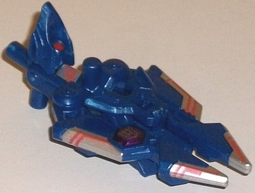

Liokaiser
Giftset (Combiner Wars) [Entertainment Earth Exclusive]
Liokaiser
Giftset (Combiner Wars) [Entertainment Earth Exclusive]
Allegiances
: Decepticon
Price
: $130 (U.S.)
(NOTE: Because this set is composed almost
entirely of repaints, this is not a full-blown review. This mainly covers
any changes made to the set and the color scheme, and merely compares it
to the original versions of these molds. For a review on voyager Sky Lynx--
the mold used for Dezarus-- go
here
. For a
review on Air Raid-- the mold used for Guyhawk-- go
here
.
For a review on Skydive-- the mold used for Fellbat-- go
here
.
For a review on Brawl-- the mold used for Drillhorn and Ironbison-- go
here
.)
Dezarus


Size
: Voyager
Difficulty of Transformation to Beast
:
Easy
Difficulty of Transformation to Torso
:
Medium
Color Scheme
: Teal, black, gray-white,
and some red, dull mustard yellow-brown, moderately light pale sky blue,
and silver
Individual Rating
: 8.3
Before I get on with
the review, first a bit of explanation is needed about this combiner group
and ESPECIALLY this toy and the history behind it. Liokaiser was originally
a 6-bot combiner released only in Japan in the latter days of G1-- he was
never released in the U.S., so that definitely makes this the most obscure
of the Combiner Wars boxsets. Because the team had no American name, Hasbro
has named these guys the "Destrons", which is the Japanese version of Decepticons.
The team each had a "Breastmaster" partner (get your childish snickers
out now), as each had a companion little animal robot that also formed
their chestplate. These Breastmaster partners aren't replicated here obviously,
but it helps explain why in addition to being a vehicle, each main member
has an animal theme. (For this one, it's a lion.) Also, another unique
thing about Liokaiser was that his main body was composed of two 'Bots--
one that formed the abs and torso, while another, Leozack, formed the chest
and head. For this version, because of the Combiner Wars setup of having
1 voyager for the body, Hasbro couldn't replicate this without a large
amount of remolding that they weren't willing to do, so instead the lower
torso bot was ignored and Leozack was made the entire main body... only
this guy isn't named Leozack. He's named Dezarus, a copyright-friendly
version of Deathsaurus, which was a Japanese Decepticon leader. Other than
the name and the fact that he's a bad guy leader, though, Dezarus bears
no resemblance to Deathsaurus. Heck, beyond the color scheme he doesn't
bear much resemblance to Leozack either, who had a much more conventional
robot mode. The colors chosen are a nice nod to Leozack, though. By far
the most common color is a nice teal, which is pretty much the exact shade
as was on G1 Leozack, and is a pretty spiffy-looking color that's spread
throughout the figure. The dominant color on many of the other Destrons
in this set-- a shade halfway between gray and white-- is used to a fairly
limited extent on Dezarus, with only the head, lower portion of the main
body, and a few other minor places this color. This isn't G1-accurate,
but I don't mind as the prevalence of the black works well, contrasting
nicely against both the teal and the white-gray to give Dezarus a major
dark color. It's threaded pretty prevalently throughout the figure-- on
the back, the neck, the paws, and the like-- so no section of Dezarus is
one-tone. In addition, there's some pretty nice minor colors, as well.
There's a straightforward red used on the shoulders, hips, and part of
the neck, along with the eyes and a few details only seen on the combiner
torso mode, which is an excellent contrasting color. There's also a decent
amount of fairly light pale sky blue plastic, used for the detachable weapons,
part of the neck, and several small connector parts. This color does an
excellent job of complementing the teal while still looking different enough
to vary things up a bit more. Additionally-- in one of the most interesting
color choices-- there's some mustard yellow-brown used on much of the mouth/face,
the top of the wings in a striped manner (along with the black and outlined
with gray-white), and on some minor details on the rear legs and on the
gestalt head and chest. Used as an accent color it actually doesn't look
half bad, as it complements the teal well while also contrasting nicely
with both the white-gray and the black. I'm not fond of the odd "5-o'clock-shadow"
thing he has going on his mouth, but other than that I like this addition.
Finally, there's a little bit of silver paint on some circular details
on the joints on the legs-- a nice touch, but it's used so little it doesn't
really add anything to the color scheme.
Dezarus has a new headsculpt--
well, less than that really, a new "eye sculpt". The head itself is still
basically the same, but the eyes are narrower and more diagonal in nature,
with an additional little fin has been added behind the eyes. It makes
Dezarus look more evil, certainly, but still a heck of a lot like Sky Lynx.
There's also a new combiner head, which I'll talk about in more detail
in the gestalt portion of this set of reviews. Other than these new headsculpts,
no mold changes have been made to the toy.
Drillhorn
Size
: Deluxe
Difficulty of Transformation to Robot
:
Easy
Difficulty of Transformation to Leg
:
Very Easy
Difficulty of Transformation to Arm
:
Easy
Color Scheme
: Gray-white, moderately
dark milky blue, and some yellow, silver, black, dark milky blue, red,
glossy moderately light blue, and light metallic silvery blue
Individual Rating
: 7.4
Drillhorn is the only
one of the Destrons in this group that hasn't had his name changed from
the original G1 version for copyright purposes. Just like the original
Drillhorn, this version turns into a drill tank (though given that the
original Drillhorn looked more like a normal tank otherwise, I've just
put the drill in place of the gun for vehicle mode instead of turning it
around like on the other drill tank uses of this mold). Drillhorn is about
half-and-half between two different colors; one is the white-gray that's
prevalent on all of the main Destrons, while the other is a fairly dark
milky blue. The dark milky blue on the front part of the tank mode/top
of the robot mode is just a dynamite color that really looks nice. Unfortunately,
using the gray-white on so much of the rest of the toy-- the back end of
the tank mode, the treads, the bottom of the robot mode, along with the
hand/foot/gun and the normal two-barreled blaster-- makes Drillhorn look
a bit bland on those sections. It's just not a color that looks great on
large areas. Of course, there are some paint apps that help break up some
of that white-gray-- just not enough, in my opinion. Drillhorn's got a
really nice black-and-yellow stripe down the sides of his tank mode, with
some silver bordering around said line. It's rather unique, and helps him
stand out a bit more. There's also some more silver on the top of the turret
section and at the end of his drill, and the silver looks particularly
good against that dark blue plastic. On his lower legs/back end of the
tank, there's a nice yellow/red color combo of two paint apps which help
spice up those parts a bit more, and there's some light metallic silvery
blue paint on the windows near the back of the drill-tank piece/weapon.
Finally, on the robot head there's some red on the eyes and a pretty cool
shade of glossy light blue on the face.
Drillhorn has a new
headsculpt, complete with a flip-out horn on the front. As you might be
able to tell from his name and his face, the original Drillhorn had a rhinoceros
Breastmaster, so his stern face and square helmet with a horn sticking
out of the forehead look pretty rhino-ish. It's pretty nicely done; no
complaints here. He also has the same drill weapon in place of Brawl's
gun barrel that first appeared with
CW Nosecone
.
Other than that, no mold changes have been made to Drillhorn.
Fellbat
Size
: Deluxe
Difficulty of Transformation to Robot
:
Easy
Difficulty of Transformation to Leg
:
Very Easy
Difficulty of Transformation to Arm
:
Very Easy
Color Scheme
: Gray-white, dark milky
purplish blue, and some black, yellow, silver, and light red
Individual Rating
: 8.3
"Fellbat" is the copyright-friendly
term for Hellbat, which understandably Hasbro didn't want to slap on a
kids' toy. He's called Fellbat because-- you guessed it-- his original
Breastmaster partner transformed into a bat, but of course we don't have
that here. As far as the color scheme, like all the other (normal-sized)
Destrons for this group, Fellbat has a good amount of that color that's
basically halfway between gray and white-- light gray, off-white, whatever
you want to call it. It's used a bit more on Fellbat than on most of the
other Destrons, being dominant on his chest, upper legs, middle of the
arms, and the wings. His other main color is dark milky purplish blue,
and the "milkiness" in particular really makes it an eye-catching color
and it contrasts very well with the white-gray. (In fact, I would argue
that out of all the deluxe toys in this set, this is the best color combo.
Yes, it is different from Drillhorn's dark blue-- it's more purpley.) There's
some black on the dual-barreled gun, the hand/gun/foot, on the tailfins,
the nosecone, and a few minor details like the robot feet. Unfortunately,
the purplish blue is so dark when it's against the black the two colors
don't differentiate themselves enough. There's also a fair amount of yellow
used for highlights on the lower legs, waist, wrists, and on the top of
the wings-- the last of which is surrounded by thick black outlines, which
looks quite good and such extreme contrast is pretty eye-catching. As far
as minor colors, there's some really nice silver on the tailfins which
looks very good (and honestly I wish had been used a bit more), some orange
on the jet cockpit (which looks great against the purplish blue), and some
light red on the wing missiles and eyes.
Fellbat has a new headsculpt--
and, like most of the other Destrons, he has two little gray fold-out pieces
that form his "bat ears". The main head looks like a standard round helmet
with a gray face, and looks pretty good-- basically like a robot Batman
with ears. It's a pretty nice new sculpt and helps differentiate him a
bit from the gazillion other versions of this mold.
Guyhawk

Size
: Deluxe
Difficulty of Transformation to Robot
:
Easy
Difficulty of Transformation to Leg
:
Very Easy
Difficulty of Transformation to Arm
:
Very Easy
Color Scheme:
Magenta, silver, black,
and some gray-white, yellow, and light glossy orange
Individual Rating
: 7.8
"Guyhawk" is a slightly
more American variation on his Japansese name, Gaihawk. So he's a guy that's
also kind of a hawk, which fits because his Breastmaster partner was a
hawk back in G1. Unlike pretty much every other Destron, Gaihawk doesn't
have much gray-white on him-- it's relegated entirely to his upper legs
and a few minor connector pieces, so it doesn't really contribute to the
color scheme much. No, instead Guyhawk's main color is... magenta. Granted,
this IS G1-accurate so I certainly can't fault Hasbro there, but I just
don't think it works here, especially when you have him next to the rest
of the team. The only pink/magenta I tend to like is hot pink when used
as an accent color on G2/'90s homages, simply for the insanity of it all.
This isn't hot pink (the pictures make it louder than it sctually is, for
some reason), but it's not a paler "normal" pink like on one of the many
versions of Arcee-- this just doesn't look good. Thankfully there's a good
amount of black to help break up all that light fairly bright coloration,
with a good amount of black on the upper arms, weapons, waist, chest, combiner
peg, and on some paint apps on the lower legs, lower arms, missiles, and
a bit behind the cockpit. The wings--both the main wings and the tailfins--
are particularly well-done, being basically dipped in silver paint and
then given yellow-and-black stripes, which look really nice against all
that silver. He's also got a bit more yellow and silver on his knees, and
some yellow on his chest. Directly against the magenta the yellow doesn't
look too hot, but against the black or silver it's quite nice. Just on
the jet cockpit, Guyhawk also has a bit of light orange, which by itself
is a decent color but, like the yellow, doesn't look that great against
the magenta.
Guyhawk has a brand
new headsculpt, with a dome-like "cap" on top of his head, a yellow paint
app across his forehead that kinda looks like a beak, fairly large unpainted
magenta eyes, and a silver face. It's a pretty good headsculpt and looks
nice, magenta aside.
Ion
Scythe

Size
: Mini-Con
Difficulty of Transformation
: Very
Easy
Color Scheme
: Moderately dark milky
blue and some silver, red, and milky dark purple
Individual Rating
: 6.3
Ion Scythe is Hasbro's
attempt at giving this set a Breastmaster, in that it has one (ever-so-slightly)
redecoed Minicon from the Japanese-only Arms Micron toys in here. There's
no real "Ion Scythe" as part of the original Liokaiser, and this guy doesn't
form a chestplate or anything. Anyways, Ion Scythe's weapon mode is a scyt--
no, wait, it's a claw weapon?! Then why is he named.... oh, nevermind.
Anyways, it's a claw weapon, with a little barrel down the center that
also makes it a ranged weapon with a gun nozzle, as well. The front part
of this mode looks pretty solid; the beast mode's tailfin is definitely
obviously there, but it blends in with the overall shape and doesn't really
stick out that much, so I consider that a pretty minor downside. A bigger
issue, I think, is the very obvious beast head just sticking right up above
the handle. Granted, like many other Arms Micron toys the face is just
one eye with a snout/beak, but once you know what Ion Scythe looks like
it's pretty darned obvious. The plastic used for all of Ion Scythe is the
same moderately dark milky blue used on Drillhorn, which is a pretty nifty
shade. The silver on the edges of the claw weapon (and along the "neck"
of the beast mode) contrasts excellently with the blue, and the red "circuitry"
lines on these silver paint apps also look great and help make Ion Scythe
look a bit more detailed than most of his Arms Micron brethren in terms
of color breakup. As one final detail he's got a little milky dark purple
"jewel" on the right side of the top of this mode that has a Decepticon
insignia emblazed on it, so you know where he stands. I still wish he had
another major plastic color, but for a toy this small it's still pretty
good. For standard connection pegs, he's got four; two on the end for handles,
one sticking up in the middle of this mode, and one in the middle between
his claws that serves as the "gun nozzle" for this mode. For standard connection
holes, he's also got four, on the underside of each of his claw prongs,
so he can combine with other Arms Micron toys in a lot of different configurations.
Ion Scythe's beast mode
is a hawk, and the transformation is very simple; just fold out the claws
to become the wings, fold down the back handle bit and his little feet
pieces, and then flip around the tailfin parts. Ta-da! Not much of a transformation,
but it works, as it's a fairly flawless mechanical hawk. I think the legs
are a bit too tiny and awkward, he does have a couple of pegs sticking
out here and there, and his tailfin is a bit small, but otherwise he's
pretty proportional and looks great. I do love the one-eyed face that makes
him look like some sort of drone, and the blades make for excellent wings.
As mentioned before, the silver and red paint apps also really help enhance
that nice blue plastic. For articulation, Ion Scythe can move back-and-forth
at the wings, where the legs meet the body, and up-and-down a bit at the
tailfins and at the neck. His neck can also rotate a little farther back,
though this has limited use. For an Arms Micron toy, this is honestly pretty
darned good articulation, especially given the beast mode.
Ironbison
Size
: Deluxe
Difficulty of Transformation to Robot
:
Easy
Difficulty of Transformation to Leg
:
Very Easy
Difficulty of Transformation to Arm
:
Easy
Color Scheme
: Dull dark mustard
yellow, silver, gray-white, and some yellow, black, metallic gold, and
red
Individual Rating
: 7.6
Ironbison is the U.S.
copyright-friendly name for G1 "Killbison", whose name obviously wasn't
going to make it untouched by Hasbro onto toy packaging. Anyways, Ironbison's
main color is a rather nice shade of dull, dark mustard yellow that borders
on gold, but isn't QUITE there. It's still a fairly nice shade, though,
and complements the gray-white on all the main Destron components quite
well. (Ironbison's gray-white is mostly confined to parts visible in robot
mode, such as the combiner port visible in his abs, upper legs, some minor
connector bits, and then his tank-gun, his normal double-barreled blaster,
and his hand/foot/gun.) What really helps to make Ironbison's color scheme,
though, is that there's a TON of silver paint on him. His treads, body
of the top section, and waist are all coated in silver paint, and having
that much silver paint just looks great-- and it goes very nicely with
the almost-gold plastic, too. There's also yellow-and-black stripe designs
on the top sides of his vehicle mode, bordered by yet more silver paint,
just like on Drillhorn. It helps differentiate Ironbison a bit from most
of the other tank-bots while also tying him to Drillhorn, too. For some
minor accent colors, there's some more black on his lower legs, some more
yellow on the top of his tank mode, some red on his waist, front of the
tank mode/chest, and eyes, and some really nice metallic gold and silver
paint on his head and faceplate, respectively. All are quite nice colors,
though not used enough to add much to the overall scheme.
Ironbison has a new
headsculpt, which like some of the other Destrons has two flip-out pieces
that give him horns to make him look more like the animal he's themed somewhat
after-- a bison/bull. With the "bull" horns, a pronounced forehead, red
eyes, and a faceplate, he certainly looks like a bison turned into a vehicular
Transformer-- it's a pretty solid headsculpt, and the gold paint on it
only makes it better. Other than the headsculpt, no changes have been made
to him.
Liokaiser
(Combined Form)
Individual Rating
: 9.3
Given that his arms are
formed from similar molds and his legs are formed from the same one, Liokaiser's
combined form ends up looking pretty symmetrical, which I generally like
(although totally understand why most Combiners can't be this way). His
hands and feet are also symmetrical in the "recommended configuration"
shown above. Each section is obviously its own 'bot with a different significant
color, but there's a good amount of that white-gray throughout the entire
figure, keeping a nice "theme" going to tie all the components (minus Ion
Scythe) together. Guyhawk kinda clashes a bit with his magenta, but otherwise
Liokaiser's colors generally fit together pretty nicely. The mustardy yellow
paint apps on Dezarus help tie him in with Ironbison a bit better, while
the teal helps make him fit in relatively well with Fellbat, Ion Scythe,
and Drillhorn. As far as how well the torso looks like Liokaiser's torso...
well, you have to ignore that G1 Liokaiser had a sixth component (Jallguar)
that made up the hips and upper legs, so that whole toy's color scheme
has been thrown out the window. Otherwise the torso's pretty close, with
the wings on the chest and the center tailfin mimicing the original's jet
cockpit and wings, albeit they're certainly smaller on this version. Detail-wise,
the head is pretty close, with a faceplate with an "eagle-like" beak detail
in the middle of said faceplate; he's also got a lion head "helmet" above
his normal head. However, the colors are wrong; nearly the entire head
should be the same teal as most of the rest of the main body, not black,
white-gray, and mustard yellow. I'm not sure what was behind that design
idea. Still, taken by itself, this is a darned good combined mode, and--
at least in this mode-- a nice update of the character--- minus the original's
trademark "twirling spear-nunchuk" weapon. Ion Scythe is a poor substitute
for that, but then again.. the original toy didn't have that weapon either...
Liokaiser Bio
:
The Destrons are a foul group of criminals
and convicts that also happens to be one of the most elite strike teams
in the galaxy. Together, they become Liokaiser, a Combiner whose sheer
power is rivaled only by his penchant for evil.
Liokaiser is definitely
the most obscure of the Combiner Wars giftsets, and it's nice to get an
updated version of the toy. The gestalt mode looks especially nice, and
given the individual members' alt modes, the combiner mode is quite symmetrical,
with a major color (gray-white) that connects all of the Destrons pretty
well. All of the main members having new headsculpts is an appreciated
touch, and Ion Scythe is a nice little extra. All of that said, this set
definitely has some negatives; the MSRP is $30 more than the other CW giftsets,
two of the main members are made of the worst Combiner Wars limb mold (the
tank), Guyhawk's magenta is garish, and the members don't have Breastmaster
partners. Most importantly, Jallguar is completely missing, and Leozack
has been replaced by an evil Sky Lynx that shares nothing in common with
the original toy beyond the colors, not to mention it's named after a completely
different Japanese Decepticon. Given there's no other version of Liokaiser,
if you really want a new version of the combiner this'll do in a pinch,
but it shares as much in common with its source material as many of the
Universe
1.0
figures-- i.e., the color schemes, the alt modes, and a couple
of concepts like the fact they combine and new headsculpts in their cases,
but they're missing some important parts of that make Liokaiser, well...
Liokaiser.
Reviews by Beastbot
Back to Transformers:
Generations Index